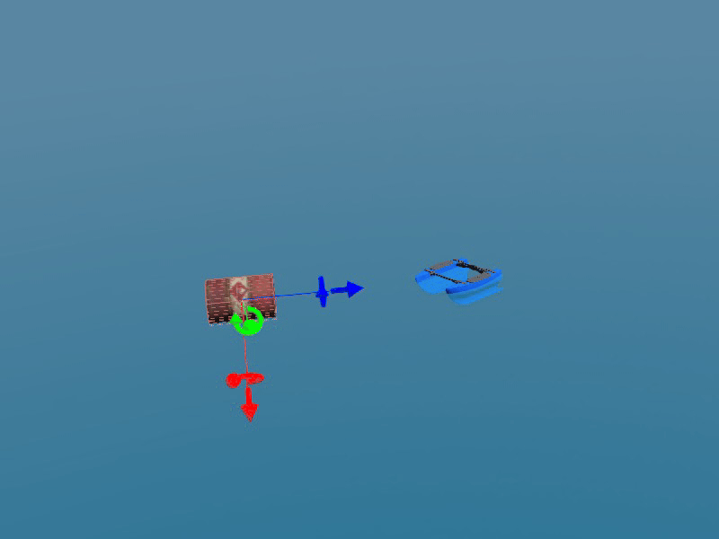
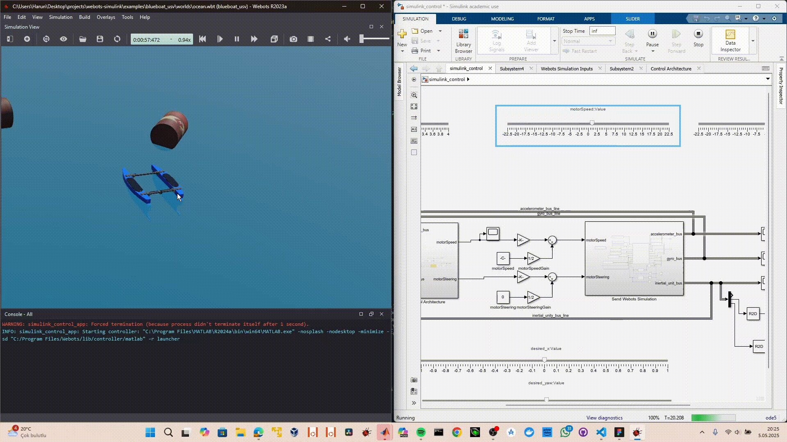

BlueBoat USV¶


The BlueBoat USV (Unmanned Surface Vehicle) is a small autonomous watercraft developed by Blue Robotics. It is designed for various marine applications including navigation experiments, environmental monitoring, and autonomous surface operations.
System Overview¶
The BlueBoat is a compact, versatile unmanned surface vehicle that provides an excellent platform for marine robotics research and development. Its modular design allows for extensive customization with various sensors and payloads.
Key Features¶
- Marine-Grade Design: Waterproof and corrosion-resistant construction
- Autonomous Capabilities: GPS navigation and waypoint following
- Modular Payload Bay: Customizable sensor and equipment mounting
- Long Endurance: Extended operation time for marine missions
- Remote Control: Manual override and telemetry capabilities
- Open Source: Hardware and software designs available for customization
Specifications¶
- Length: Approximately 1.2m
- Beam (Width): 0.6m
- Draft: 0.15m (shallow water capable)
- Weight: ~25kg (varies with payload)
- Max Speed: ~5 knots (2.5 m/s)
- Endurance: Several hours (battery dependent)
- Communication: Long-range radio telemetry
Components¶
Propulsion System¶
- Motors: Two thruster motors for differential thrust control
left_motor: Port side propulsion unitright_motor: Starboard side propulsion unit- Propellers: Optimized for efficiency and maneuverability
- Control: Variable speed control with reverse capability
Hull Design¶
- Catamaran Configuration: Twin-hull design for stability
- Buoyancy: Positive buoyancy with safety margins
- Payload Bay: Central compartment for sensors and electronics
- Waterproofing: Sealed electronics compartments
Available Sensors¶
- GPS: High-precision positioning for navigation
- IMU: 9-axis inertial measurement unit for orientation
- Camera: Optional visual monitoring and recording
- Depth Sensor: Water depth measurement capability
- Environmental Sensors: Temperature, pH, conductivity (optional)
Simulink Integration¶
Control Interface¶
The BlueBoat USV integrates seamlessly with Simulink through the webots-simulink bridge:
% Motor control functions
wb_motor_set_velocity.m % Set thruster velocities
wb_motor_get_position.m % Get motor positions
wb_robot_step.m % Main simulation step
% Sensor interface functions
wb_gps_get_values.m % GPS position data
wb_imu_get_values.m % Orientation and acceleration
wb_camera_get_image.m % Visual data acquisition
Navigation Control¶
The control system implements:
- Waypoint Navigation: GPS-based path following
- Station Keeping: Position holding against currents
- Heading Control: Compass-based directional control
- Speed Control: Velocity regulation for efficiency
Control System Design¶
System Block Diagram¶
flowchart TB
subgraph Reference["Reference Inputs"]
R1[/"Position Reference<br/>(x_d, y_d)"/]
R2[/"Heading Reference<br/>(ψ_d)"/]
R3[/"Velocity Reference<br/>(u_d)"/]
end
subgraph Guidance["Guidance System"]
WP[Waypoint<br/>Manager]
LOS[Line-of-Sight<br/>Algorithm]
PP[Path<br/>Planner]
end
subgraph Navigation["Navigation System"]
GPS[GPS<br/>Receiver]
IMU[IMU<br/>Sensor]
COMP[Compass]
EKF[Extended<br/>Kalman Filter]
end
subgraph Control["Control System"]
subgraph OuterLoop["Outer Loop - Position"]
PC[Position<br/>Controller]
end
subgraph MiddleLoop["Middle Loop - Heading"]
HC[Heading<br/>Controller]
end
subgraph InnerLoop["Inner Loop - Velocity"]
VC[Velocity<br/>Controller]
end
end
subgraph Actuators["Propulsion System"]
MIX[Differential<br/>Thrust Mixer]
LM[Left<br/>Motor]
RM[Right<br/>Motor]
end
subgraph Plant["USV Dynamics"]
USV[BlueBoat<br/>Vehicle]
end
R1 --> WP
WP --> LOS
LOS --> PP
PP --> PC
R2 --> HC
R3 --> VC
PC --> HC
HC --> VC
VC --> MIX
MIX --> LM
MIX --> RM
LM --> USV
RM --> USV
USV --> GPS
USV --> IMU
USV --> COMP
GPS --> EKF
IMU --> EKF
COMP --> EKF
EKF --> PC
EKF --> HC
EKF --> VC
style Reference fill:#e1f5fe
style Guidance fill:#fff3e0
style Navigation fill:#f3e5f5
style Control fill:#e8f5e9
style Actuators fill:#ffebee
style Plant fill:#fce4ecState-Space Model¶
The BlueBoat USV dynamics are modeled using a 6-DOF state-space representation:
flowchart LR
subgraph Inputs["Control Inputs u"]
U1["τ_u (Surge Force)"]
U2["τ_r (Yaw Moment)"]
end
subgraph StateSpace["State-Space Model<br/>ẋ = Ax + Bu<br/>y = Cx"]
subgraph States["State Vector x"]
S1["x - North Position"]
S2["y - East Position"]
S3["ψ - Heading Angle"]
S4["u - Surge Velocity"]
S5["v - Sway Velocity"]
S6["r - Yaw Rate"]
end
end
subgraph Outputs["Outputs y"]
Y1["Position (x, y)"]
Y2["Heading (ψ)"]
Y3["Velocities (u, v, r)"]
end
Inputs --> StateSpace
StateSpace --> Outputs
style Inputs fill:#ffcdd2
style StateSpace fill:#c8e6c9
style Outputs fill:#bbdefbState-Space Matrices¶
%% BlueBoat USV State-Space Model
% State vector: x = [x, y, psi, u, v, r]'
% x, y: Position in NED frame [m]
% psi: Heading angle [rad]
% u: Surge velocity [m/s]
% v: Sway velocity [m/s]
% r: Yaw rate [rad/s]
% Physical Parameters
m = 25; % Mass [kg]
Iz = 5; % Yaw moment of inertia [kg*m^2]
L = 1.2; % Length [m]
B = 0.6; % Beam width [m]
% Hydrodynamic Coefficients (linearized)
Xu = -5; % Surge damping [N*s/m]
Yv = -20; % Sway damping [N*s/m]
Nr = -2; % Yaw damping [N*m*s/rad]
% Added Mass
Xu_dot = -2; % Surge added mass [kg]
Yv_dot = -10; % Sway added mass [kg]
Nr_dot = -1; % Yaw added mass [kg*m^2]
% Effective mass/inertia
m_u = m - Xu_dot;
m_v = m - Yv_dot;
Iz_r = Iz - Nr_dot;
% Linearized State-Space Matrices (at constant velocity U0)
U0 = 1.0; % Nominal surge velocity [m/s]
% A matrix (6x6) - System dynamics
A = [0, 0, -U0, 1, 0, 0;
0, 0, U0, 0, 1, 0;
0, 0, 0, 0, 0, 1;
0, 0, 0, Xu/m_u, 0, 0;
0, 0, 0, 0, Yv/m_v, 0;
0, 0, 0, 0, 0, Nr/Iz_r];
% B matrix (6x2) - Input mapping
B = [0, 0;
0, 0;
0, 0;
1/m_u, 0;
0, 0;
0, 1/Iz_r];
% C matrix (6x6) - Full state output
C = eye(6);
% D matrix (6x2) - No direct feedthrough
D = zeros(6, 2);
% Create state-space system
sys = ss(A, B, C, D);
sys.StateName = {'x', 'y', 'psi', 'u', 'v', 'r'};
sys.InputName = {'tau_u', 'tau_r'};
sys.OutputName = {'x', 'y', 'psi', 'u', 'v', 'r'};
Control Architecture Detail¶
flowchart TB
subgraph HeadingControl["Heading Control Loop"]
PSI_D[/"ψ_d<br/>(Desired Heading)"/]
PSI[/"ψ<br/>(Actual Heading)"/]
ERR_PSI((+<br/>-))
PID_H[PID Controller<br/>Kp=2.0, Ki=0.1, Kd=0.5]
TAU_R["τ_r<br/>(Yaw Moment)"]
PSI_D --> ERR_PSI
PSI --> ERR_PSI
ERR_PSI --> PID_H
PID_H --> TAU_R
end
subgraph VelocityControl["Velocity Control Loop"]
U_D[/"u_d<br/>(Desired Velocity)"/]
U[/"u<br/>(Actual Velocity)"/]
ERR_U((+<br/>-))
PID_V[PID Controller<br/>Kp=50, Ki=5, Kd=10]
TAU_U["τ_u<br/>(Surge Force)"]
U_D --> ERR_U
U --> ERR_U
ERR_U --> PID_V
PID_V --> TAU_U
end
subgraph ThrustAllocation["Differential Thrust Allocation"]
ALLOC[Thrust<br/>Allocator]
T_L["T_L<br/>(Left Thrust)"]
T_R["T_R<br/>(Right Thrust)"]
TAU_U --> ALLOC
TAU_R --> ALLOC
ALLOC --> T_L
ALLOC --> T_R
end
subgraph Equations["Thrust Allocation"]
EQ1["T_L = (τ_u/2) - (τ_r/B)"]
EQ2["T_R = (τ_u/2) + (τ_r/B)"]
end
style HeadingControl fill:#e3f2fd
style VelocityControl fill:#f3e5f5
style ThrustAllocation fill:#fff8e1
style Equations fill:#f5f5f5Line-of-Sight Guidance¶
flowchart LR
subgraph LOSGuidance["LOS Guidance Algorithm"]
WP1["Waypoint k<br/>(x_k, y_k)"]
WP2["Waypoint k+1<br/>(x_{k+1}, y_{k+1})"]
POS["Current Position<br/>(x, y)"]
ALPHA["Path Angle<br/>α_k = atan2(y_{k+1}-y_k, x_{k+1}-x_k)"]
CROSS["Cross-Track Error<br/>e = -(x-x_k)sin(α_k) + (y-y_k)cos(α_k)"]
DELTA["Lookahead Distance<br/>Δ"]
PSI_D["Desired Heading<br/>ψ_d = α_k + atan(-e/Δ)"]
end
WP1 --> ALPHA
WP2 --> ALPHA
POS --> CROSS
ALPHA --> CROSS
CROSS --> PSI_D
DELTA --> PSI_D
ALPHA --> PSI_D
style LOSGuidance fill:#e8f5e9Marine Vehicle Dynamics¶
The BlueBoat follows marine vehicle dynamics principles:
% Surge motion (forward/backward)
X = thrust_force - drag_force
% Yaw motion (turning)
N = differential_thrust * beam_width/2
% Simple heading control
heading_error = desired_heading - current_heading;
rudder_command = Kp * heading_error;
Differential Thrust Control¶
The BlueBoat uses differential thrust for maneuvering:
# Forward movement
left_motor_speed = base_speed
right_motor_speed = base_speed
# Turn right
left_motor_speed = base_speed + turn_rate
right_motor_speed = base_speed - turn_rate
# Reverse
left_motor_speed = -base_speed
right_motor_speed = -base_speed
Navigation Algorithms¶
GPS Waypoint Following¶
The BlueBoat implements several navigation modes:
- Direct Navigation: Straight-line path to target
- Waypoint Following: Sequential waypoint navigation
- Loiter Mode: Circular pattern around a point
- Return-to-Launch: Automatic return to start position
Environmental Adaptation¶
- Current Compensation: Drift correction using GPS feedback
- Wind Resistance: Heading adjustments for wind effects
- Wave Response: Motion filtering for sensor stability
Mission Planning¶
Typical Mission Profiles¶
- Environmental Monitoring:
- Water quality sampling along transects
- Temperature and pH measurement
-
Pollution detection and mapping
-
Bathymetric Surveys:
- Depth mapping using sonar
- Underwater terrain modeling
-
Harbor and coastal surveys
-
Search and Rescue Support:
- Visual search patterns
- Emergency equipment delivery
-
Communication relay operations
-
Research Applications:
- Marine biology data collection
- Oceanographic measurements
- Long-term environmental monitoring
Usage Examples¶
Basic Operation¶
- Setup: Load the BlueBoat world file in Webots
- Configuration: Set desired sensors in the
body_slot - Mission Planning: Define waypoints and mission parameters
- Execution: Launch autonomous mission or manual control
Simulink Control¶
% Example mission parameters
mission_waypoints = [
0, 0; % Start position
100, 0; % First waypoint
100, 100; % Second waypoint
0, 100; % Third waypoint
0, 0 % Return home
];
% Control loop
for i = 1:length(mission_waypoints)
navigate_to_waypoint(mission_waypoints(i,:));
wait_for_arrival();
end
Sensor Integration¶
The BlueBoat's modular design allows for various sensor configurations:
- Basic Configuration: GPS + IMU for navigation
- Mapping Configuration: + Sonar for bathymetry
- Monitoring Configuration: + Water quality sensors
- Research Configuration: + Multiple scientific instruments
Performance Characteristics¶
Operating Parameters¶
- Typical Speed: 2-3 knots for efficient operation
- Maximum Speed: ~5 knots in calm conditions
- Turning Radius: ~2 boat lengths minimum
- Position Accuracy: ±2-5 meters (GPS dependent)
- Mission Duration: 2-6 hours (battery/fuel dependent)
Environmental Limits¶
- Wave Height: Up to 0.5m significant wave height
- Wind Speed: Up to 15 knots sustained
- Operating Temperature: -10°C to +50°C
- Water Depth: Minimum 0.2m depth required
Safety and Regulations¶
Safety Features¶
- Fail-Safe Return: Automatic return on communication loss
- Low Battery Return: Automatic return at low power
- Emergency Stop: Remote emergency shutdown capability
- Status Monitoring: Real-time telemetry and alerts
Regulatory Compliance¶
- Maritime Regulations: Comply with local USV regulations
- Navigation Rules: Follow maritime traffic rules
- Communication: Maintain VHF radio monitoring
- Visual Identification: Proper lighting and marking
Applications and Use Cases¶
Research and Development¶
- Algorithm Testing: Navigation and control algorithm validation
- Sensor Development: New marine sensor integration and testing
- Multi-Vehicle Operations: Swarm and collaborative behaviors
Commercial Applications¶
- Aquaculture: Fish farm monitoring and maintenance
- Port Operations: Harbor patrol and monitoring
- Environmental Services: Water quality monitoring and assessment
Educational Applications¶
- Marine Robotics Courses: Hands-on USV control and programming
- Oceanography: Data collection methods and instruments
- Control Systems: Marine vehicle dynamics and control
References¶
Educational Purpose: The BlueBoat USV simulation provides an excellent platform for learning marine robotics concepts including marine vehicle dynamics, GPS navigation, environmental monitoring, and autonomous surface operations. The integration with Simulink enables rapid development and testing of marine control algorithms in a realistic virtual environment before deployment on actual hardware.